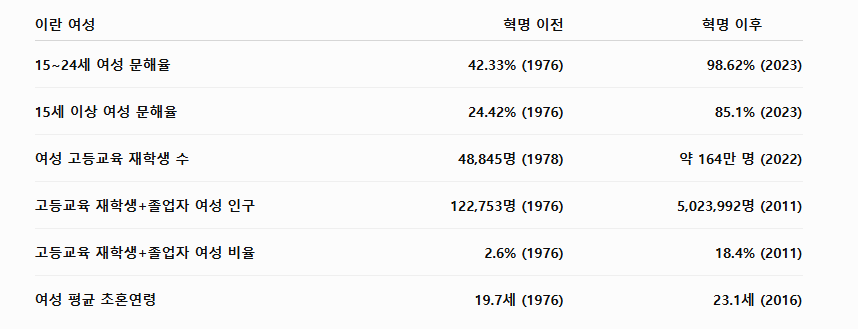

의외의(?) 면이지만 교육열이 높았던 호메이니는 문맹 퇴치 운동, 여성 교육 운동을 벌여서 여성 문해율을 증가시키고 여성 대학 입학율을 대거 끌어올림.

의외의(?) 면이지만 교육열이 높았던 호메이니는 문맹 퇴치 운동, 여성 교육 운동을 벌여서 여성 문해율을 증가시키고 여성 대학 입학율을 대거 끌어올림.
하버지 이제야 깨달아요
기대치가 너무 낮아서 보통 국가라도 해냈을 것을 업적으로 쳐주는 건가
여기에 비추 다는 애는 무슨 심리일까
근데 어째서 이란의 성평등 지수가 한국보다 36위나 더 높은거죠
그러나 신정체제로 인한 여성 사회 활동 제한으로 아무 의미가 없음
산유국이 50년 동안 저거 밖에 못했으면 쳐 맞아야 됨
한국은 70년만에 식민지, 전쟁으로 초토화된 상태에서 선진국이 되었는데
자원의 저주라고 오히려 산유국이라 그랬던 것일수도 있음
저지랄해봐야 방구석에서 서방님 위해서 입을 개꼴리는 속옷이나 사는 용도로 쓰이는 거 아님?
오
트럼프가 그마마 온건차 쳐낸거 라니깐
이슬람에는 극단쥬의자만 잇는줄 아나 ㅋㅋ
저기 글 되게 어려워보이던데
호메이니는 원래 학자 출신이라 그런듯
근데 위에 적힌것들 비슷한 시기 우리나라로 봐도 저만큼 올랐을꺼같은데
호메이니가 망명하느라 해외생활도 많이해서 원리주의자들중엔 그나마 가장 이성적인 인간이었다며 여성관련정책도 급진적으로 우향화하지 않으려했고. 그런양반이 살먼 루슈디한테는 왜그랬는지 모르겠다만
이란 평균 아이큐가 동북아 3국에 뒤지지 않더라
팔라비가 무너진 것도 결국 지독한 수준의 사회빈부격차와 민생안정 실패, 그로인한 구조적 모순을 극복하지 못했었기 때문이었고, 신정체제가 들어선 이유도 이란사람들이 단순히 종교에 미친 바보들이라서 일어났기 때문은 아님... 역설적으로 오늘날 이란에서 격렬하게 시위가 일어나고 이를 또 무자비하게 진압하는 이유도 마냥 우민화정책을 펼치지 않았기 때문인거지.